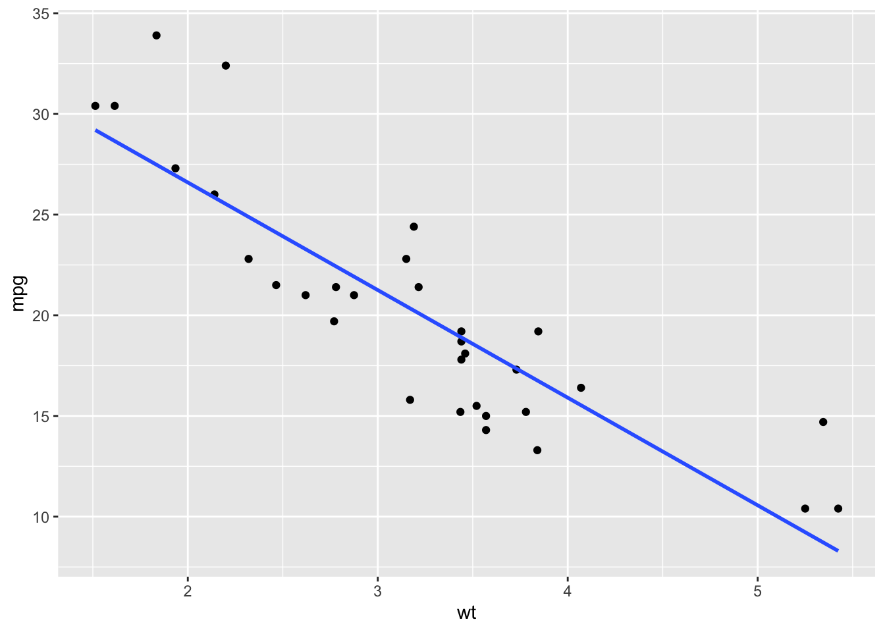
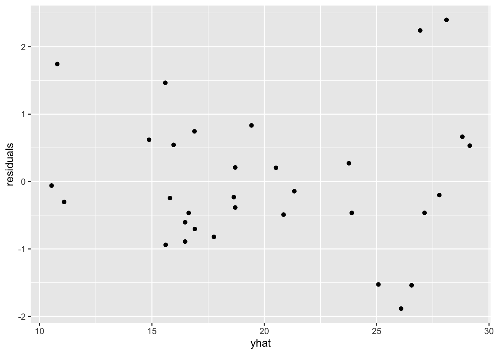
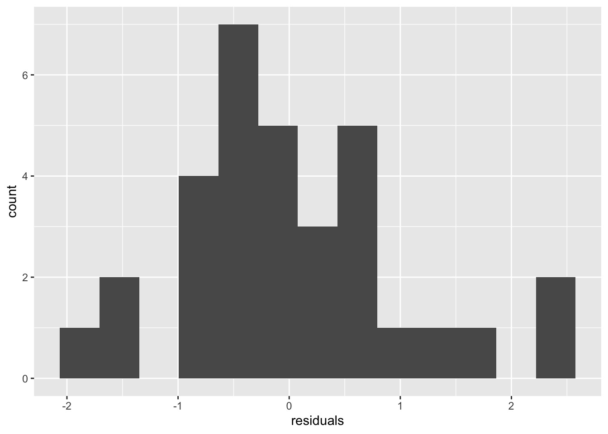
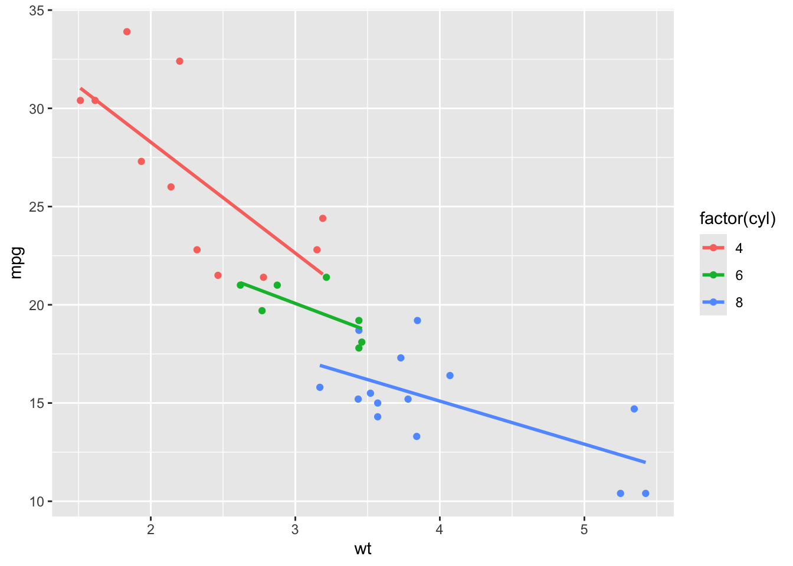
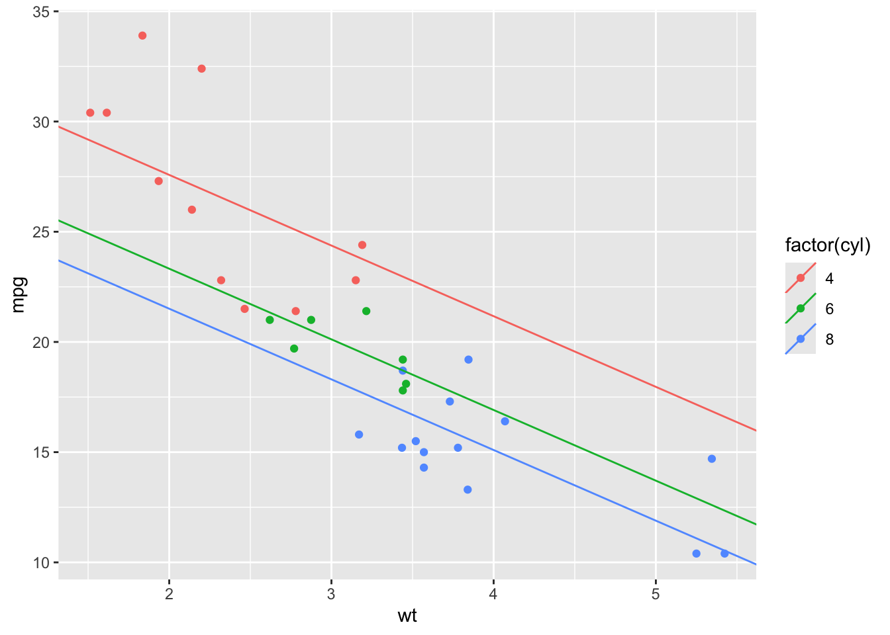

library(ggplot2)
suppressMessages(library(dplyr))Multiple Linear Regression, unique intercepts
We’ll use the dataset that is built into R named mtcars to predict mpg using both cyl, the number of cylinders the car has, and wt, the weight of the car in thousands of pounds. First we’ll fit the model and then immediately check assumptions before interpretting the model – you don’t want to waste your time interpretting a not good model.
data(mtcars)# Step 0: plot the data!
ggplot(mtcars, aes(wt, mpg)) +
geom_point() +
geom_smooth(method = "lm", formula = y ~ x, se = FALSE)
fit <- lm(mpg ~ factor(cyl) + wt, data = mtcars)yhat <- fitted(fit)
#r <- residuals(fit)
r <- rstandard(fit) # also check for outliers
df <- data.frame(yhat = yhat, residuals = r)Using the scatter plot of standardized residuals on yhat, we can check both linearity and constant variation.
ggplot(df, aes(yhat, residuals)) +
geom_point()
There is slight indication of a broken assumption, specifically constant variation. But because there are no obvious outliers which are contributing to breaking the assumption of constant variation, were kind of stuck in the gray area. I’d personally note the slight aberration and then go about my business interpreting the model.
Check normality with a histogram of the standardized residuals. Any departures from normality indicate the assumption of normality is broken. If any standardized residual is greater than 3 or less than -3, the observation that residual came from could be considered an outlier.
ggplot(df, aes(residuals)) +
geom_histogram(bins = 13)
# adjust the bins until it looks reasonableThe plot doesn’t look strictly normal, but it is fairly symmetric and unimodel (one hump), so that’s good enough.
Next, we’ll interpret the output.
summary(fit)
Call:
lm(formula = mpg ~ factor(cyl) + wt, data = mtcars)
Residuals:
Min 1Q Median 3Q Max
-4.5890 -1.2357 -0.5159 1.3845 5.7915
Coefficients:
Estimate Std. Error t value Pr(>|t|)
(Intercept) 33.9908 1.8878 18.006 < 2e-16 ***
factor(cyl)6 -4.2556 1.3861 -3.070 0.004718 **
factor(cyl)8 -6.0709 1.6523 -3.674 0.000999 ***
wt -3.2056 0.7539 -4.252 0.000213 ***
---
Signif. codes: 0 '***' 0.001 '**' 0.01 '*' 0.05 '.' 0.1 ' ' 1
Residual standard error: 2.557 on 28 degrees of freedom
Multiple R-squared: 0.8374, Adjusted R-squared: 0.82
F-statistic: 48.08 on 3 and 28 DF, p-value: 3.594e-11The rest of this tries to capture follow up points made about the models and/or questions asked in class.
Notice that including the variable cyl as a numeric variable in the model does increase the adjusted \(R^2\). Because we can’t have \(3.14\) cylinders in a car, though, we should include cyl as a categorical/factor explanatory variable.
summary(lm(mpg ~ wt, data = mtcars))$adj.r.squared[1] 0.7445939# add cyl as numeric, increases R^2, but not great in theory
summary(lm(mpg ~ cyl + wt, data = mtcars))$adj.r.squared[1] 0.8185189# add cyl as factor, best
summary(lm(mpg ~ factor(cyl) + wt, data = mtcars))$adj.r.squared[1] 0.8200146“Can we plot the model we just fit, where we have unique intercepts (per level of cyl) and a shared slope across the numeric variable wt?”
Yes, but not easily. It’s not easy, because by default ggplot2 plots unique intercepts and unique slopes. The model we fit above has unique intercepts and a shared slope (parallel lines).
ggplot(mtcars, aes(wt, mpg, color = factor(cyl))) +
geom_point() +
geom_smooth(method = "lm", se = FALSE)`geom_smooth()` using formula = 'y ~ x'
To get an appropriate representation of the model we fit, you have to ask ggplot2 real nice.
beta <- coef(fit)
lvls <- factor(unique(mtcars$cyl))
ints <- predict(fit, newdata = data.frame(cyl = lvls, wt = 0))
slp <- beta[4]
dfp <- data.frame(intercept = ints, slope = slp, g = lvls)
ggplot() +
geom_point(data = mtcars, aes(wt, mpg, color = factor(cyl))) +
geom_abline(data = dfp,
aes(intercept = intercept,
slope = slope,
color = g))
# making you all reproduce this code is mean, but how about interpreting the code?